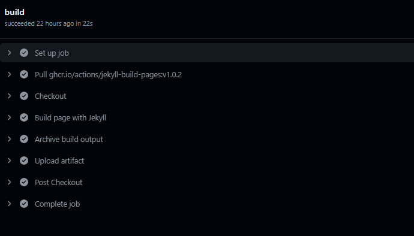

I was looking to use blogging frameworks for so long now.
I believe a good framework should cover the following requirements:
- Serverless
- Focussed blog writing (avoid debugging while writing)
- Theme community support
The two open source “Static Site Generators” octopress and hexo are well heard of.
A blog I was following for long was made in octopress, so I too started with octopress
Octopress
Octopress is jekyll based blogging. It generates a static html based out of your source code, which you can push to your git. You can server your blog page via github pages (there are other altenatives like heroku, which I may try later on).
So, github pages can be used to make a serverless blogging page. Its quite straight forward to create. All you need is a github account.
Every time you push your changes, github builds your code with jekyll and is auto deployed.

The issue with Octopress 3, which I found was that it supported jekyll version 2 and not 3.6.3 which is used by github to run the build. It took serious amount of configuration changes to get it up and running.
To the rescue, Hexo
Hexo
Hexo is a npm library which does everything that jekyll does for Octopress, but it is much simpler to deploy.
I wouldn’t deny that using octopress, now I had more experience with Static Site Generators, but this was still very straight forward.
All I had to do was create a repo for source code. In _config.yml , I added
1 | deploy: |
That’s it. Then i ran
1 | hexo init |
Hexo creates a public folder and its content is pushed to username.github.io
And just like that and my blog page is live. I have to maintain 2 github repo. My main repo is private and the generated blog html/css/js is public.
I use the command hexo server to work on localhost
PS. don’t forget to add
publicfolder to.gitignore